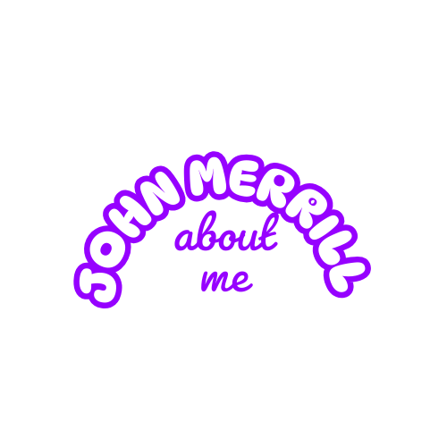
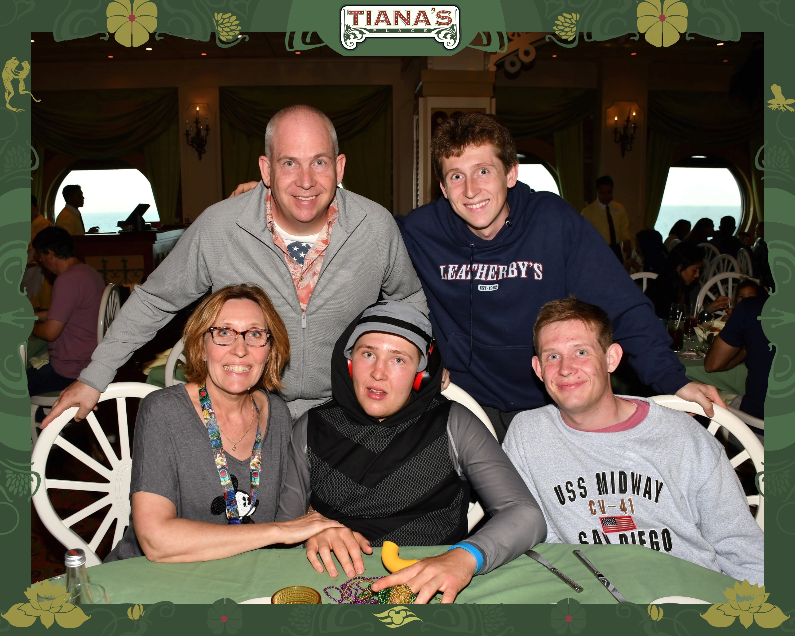
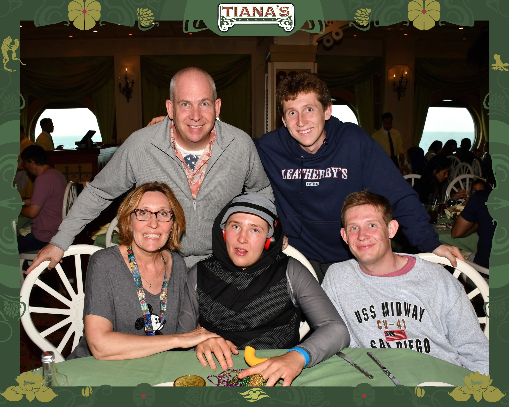
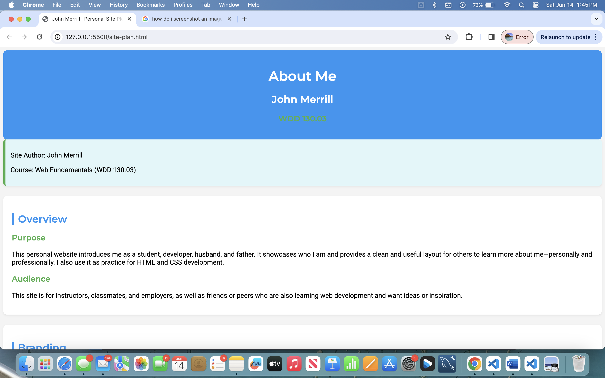
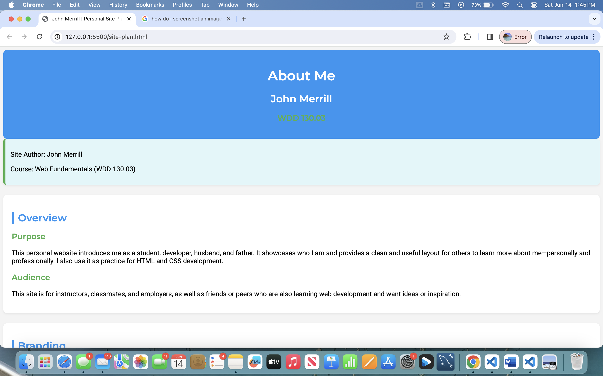

Overview
Purpose
This personal website introduces me as a student, developer, husband, and father. It showcases who I am and provides a clean and useful layout for others to learn more about me—personally and professionally. I also use it as practice for HTML and CSS development.
Audience
This site is for instructors, classmates, and employers, as well as friends or peers who are also learning web development and want ideas or inspiration.
Branding
Website Logo
Style Guide
Color Palette
| Primary #4CAF50 |
Secondary #FF9800 |
Accent 1 #2196F3 |
Accent 2 #e0f7fa |
|---|
Typography
Headings: Montserrat
Paragraphs: Roboto
Navigation
Site Map
Content
Home Page
Welcome to my site! I’m John Merrill—a BYUI student working on a degree in business management. This page is your introduction to who I am and what you’ll find here. It’s clear, simple, and designed to help users move to the other pages quickly.
Images for the Home Page:


About Me
This section shares the story behind who I am—where I’m from, how I balance school and family, and what values are important to me. It includes stories and background information about my life in the form of photos and personal growth through education.
Images for the About Me Page:
 

My Projects
This is a showcase of the work I’ve done during my coursework and on my own. It includes small HTML/CSS sites, logo work, and any design/code projects that reflect my growth.
Images for the Projects Page:
 
